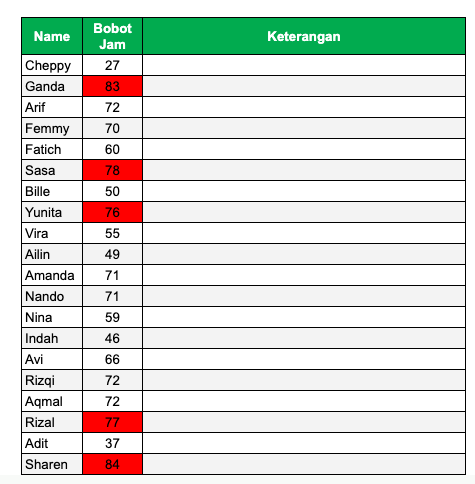
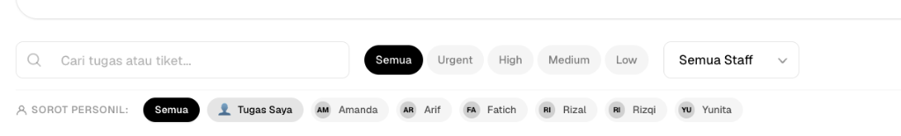
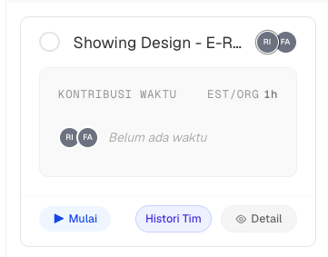
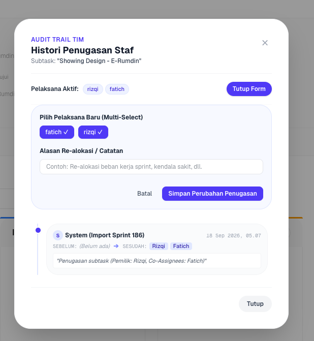
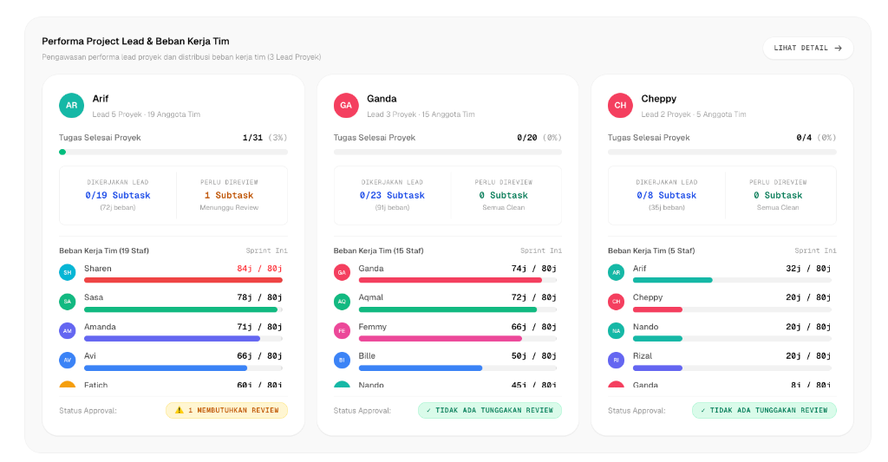

Modern Sprint & Task
Orchestration Platform
Menghubungkan fleksibilitas Product Design Workflow dengan Akuntabilitas Berbasis Bukti (Evidence-Based) dan visibilitas Dashboard Management eksekutif.
Mengapa Tools Konvensional & Spreadsheet Menghambat Tim?
Tim produk dan pimpinan sering kali terjebak antara tools kaku yang memperlambat pengerjaan atau spreadsheet manual yang rawan hilang kendali.
1. Beban Input Manual & Overload Jam Kerja
Pencatatan berulang di spreadsheet membuang 4–6 jam/minggu. Staf mengalami overload tanpa deteksi dini (beban mencapai 84j/80j kapasitas).
2. Klaim Status Selesai yang "Abu-abu"
Status tiket "Done" sering diklaim tanpa lampiran artefak yang valid. Lead kesulitan mengaudit apakah file Figma atau kode sudah benar-benar siap rilis.
3. Data Kinerja Terisolasi (Blind Spot Manajemen)
Pimpinan tidak memiliki dashboard terintegrasi untuk melihat distribusi beban tim, bottleneck review, atau rekapitulasi evaluasi kerja objektif.

Data faktual: Jam kerja staf melonjak di atas kapasitas (merah) tanpa visibilitas kendali otomatis.
Dibangun Berdasarkan Workflow Product Design
Bukan sekadar checklist kaku; sistem ini mencerminkan lifecycle nyata tim produk: BRD/Epic $\rightarrow$ Task Detail $\rightarrow$ Subtask $\rightarrow$ Figma Review $\rightarrow$ Iterasi $\rightarrow$ Handoff.
Hierarki 4-Level Terstruktur
Setiap ide bisnis dari BRD dipecah menjadi Sprint $\rightarrow$ Project $\rightarrow$ Task $\rightarrow$ Subtask dengan kejelasan relasi parent-child.
- Sinkronisasi status vertikal otomatis
- Menghindari task mengambang tanpa pemilik
Definition of Done (DoD) Built-in
Setiap Task memuat bagian Goals, Description, dan DoD eksplisit yang langsung terlihat oleh staf pelaksana sebelum mulai bekerja.
- Standar kualitas seragam antar desainer
- Mencegah miskomunikasi ekspektasi output
Matriks Lead & Multi-Assignee
Mendukung kolaborasi multi-disiplin: satu subtask desain UI dapat dikerjakan desainer utama bersama researcher atau copywriter.
- Role Lead yang jelas sebagai reviewer
- Pemetaan kapasitas tim per squad
Simple, Fast & Easy to Use
Dirancang dengan filosofi Zero-Friction UX: tidak ada form bertumpuk, interaksi serba satu-klik, dan filter yang memprioritaskan fokus kerja individu.


Sorot Personil Sekali Klik (Spotlight)
Cukup klik avatar atau tombol "Tugas Saya" untuk menyaring puluhan tugas dalam hitungan milidetik. Papan langsung menampilkan apa yang harus dikerjakan hari ini.
Interactive Drag-and-Drop Kanban
Papan Kanban berbasis sensor keyboard dan pointer modern (@dnd-kit). Perubahan status terasa mulus, responsif, dan bebas lag.
Timer Satu Sentuhan (1-Click Action)
Mulai waktu kerja langsung dari kartu subtask dengan tombol [▶ Mulai]. Tidak perlu membuka popup rumit untuk mencatat jam kerja.
Mendukung Evidence-Based Working
Tidak ada lagi klaim "sudah selesai" tanpa bukti konkret. Sistem memberlakukan Quality Gate otomatis sebelum tugas dapat berpindah ke tahap review.
Evidence Gatekeeping Sebelum Review
Saat kartu ditarik ke In Review, dialog bukti kerja otomatis muncul mewajibkan tautan Figma/PR, screenshot, atau catatan hasil kerja.
Alur Persetujuan Tertutup (Closed-Loop)
Lead memiliki wewenang: Approve (masuk Done) atau Request Revision dengan feedback spesifik yang terekam di activity feed.
Audit Trail Realokasi Staf
Setiap pergantian assignee mewajibkan pengisian alasan re-alokasi dan tersimpan permanen di histori audit untuk mencegah saling lempar tanggung jawab.

Mendukung Dashboard Management & Analytics
Mengubah ribuan log aktivitas menjadi Executive Cockpit: pimpinan divisi dapat memantau produktivitas, beban sprint, dan balance kapasitas secara real-time.

Tampilan langsung kapasitas jam staf vs target 80 jam sprint, subtask lead, dan status review.
Formula Skor Kinerja Multi-Faktor
Bukan hanya jumlah tiket: penilaian mengombinasikan rasio penyelesaian subtask, kontribusi jam kerja efektif, dan indeks beban kerja proporsional.
Deteksi Dini Bottleneck & Burnout
Warna indikator otomatis (Merah > 80j, Kuning mendekati kapasitas, Hijau ideal) membantu Lead menyeimbangkan pembagian tugas sebelum sprint berakhir.
Export Laporan Instan (PDF & Excel)
Satu klik untuk mengunduh rekapitulasi sprint resmi dalam format .xlsx dan .pdf yang siap dibawa ke rapat evaluasi pimpinan.
Smart Sprint Sync: Jembatan Google Spreadsheet
Mengadopsi sistem baru tanpa memaksa tim mengubah kebiasaan lama. Hubungkan Google Spreadsheet perencanaan sprint langsung ke database TaskForge secara cerdas.
1. Tarik Data Otomatis (Pull Sync)
Melalui Apps Script API terintegrasi, baris sprint ditarik dalam hitungan detik dengan verifikasi latency dan status koneksi real-time.
2. Smart Diff Preview
Sistem menganalisis selisih data sebelum ditulis ke database: task baru, task diubah, dan task selesai ditampilkan transparan agar tidak terjadi penimpaan salah.
3. Relational Mapping Otomatis
Tabel datar spreadsheet langsung diparsing menjadi hierarki relasional SQLite/Drizzle lengkap dengan pemetaan assignee, bobot jam, dan kategori lead.
Output & Janji Nyata untuk Stakeholder
Tiga dimensi komitmen utama yang dijamin dan diterima oleh pimpinan serta organisasi dari implementasi TaskForge.
1. Output Berwujud (Deliverables)
Infrastruktur nyata yang langsung dapat diakses dan digunakan:
- Single Source of Truth Platform: Aplikasi web terpadu pengganti spreadsheet tercecer.
- Executive Cockpit Dashboard: Pemantauan real-time kapasitas tim & status review.
- Dokumen 1-Click PDF & Excel: Rekapitulasi sprint resmi siap cetak kapan saja.
- Deck Presentasi Interaktif: SOP & panduan alur kerja digital mandiri.
2. Efisiensi & Nilai Bisnis (KPI)
Penghematan biaya & akselerasi produktivitas terukur:
- Setup Sprint < 1 Detik: Impor otomatis memangkas waktu dari jam kerja ke milidetik.
- Zero-Unverified Done: Jaminan 100% tiket selesai memiliki bukti fisik terlampir.
- Pencegahan Burnout: Indikator batas 80j menghindari kelelahan tim.
- Hemat 4–6 Jam/Sprint: Waktu rekapitulasi evaluasi menjelang rapat pimpinan.
3. Tata Kelola & Akuntabilitas
Peningkatan kedisiplinan dan integritas operasional:
- Audit Trail Re-alokasi 100%: Riwayat mutasi tugas tercatat lengkap dengan alasan.
- Closed-Loop Quality Control: Lead memiliki kendali Approve / Request Revision terarah.
- High Adoption Rate: UI tanpa friksi menjamin kepatuhan penggunaan tanpa penolakan.
Transformasi Efisiensi & Roadmap Implementasi
Menghadirkan titik temu sempurna antara kenyamanan desainer bekerja secara fleksibel dengan kebutuhan manajemen akan akuntabilitas dan kontrol strategis.
| Aspek Operasional | Sebelumnya (Cara Lama / Spreadsheet) | Dengan TaskForge (Platform Baru) |
|---|---|---|
| Akuntabilitas Task | Klaim selesai mandiri tanpa bukti fisik terlampir | Wajib Evidence Gate (Figma URL / PR / Dokumen) |
| Manajemen Waktu | Estimasi kasar & pencatatan log manual yang sering lupa | Timer presisi tersinkronisasi database aktivitas |
| Pemerataan Beban | Sering terjadi staf overload hingga 84 jam tanpa disadari | Kapasitas 80j terlihat visual & audit re-alokasi transparan |
| Pelaporan Eksekutif | Membutuhkan 1–2 hari merekap spreadsheet sebelum rapat | 1-Click Export ke PDF & Excel resmi kapan saja |